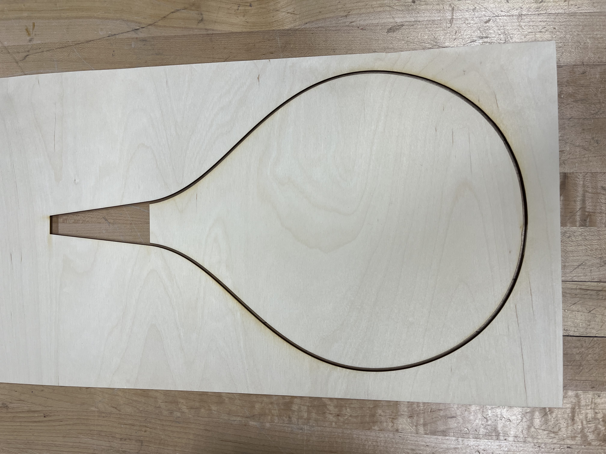
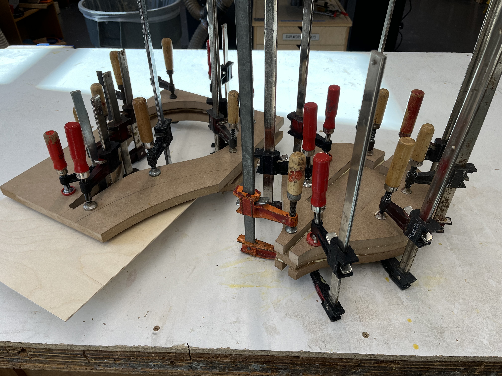
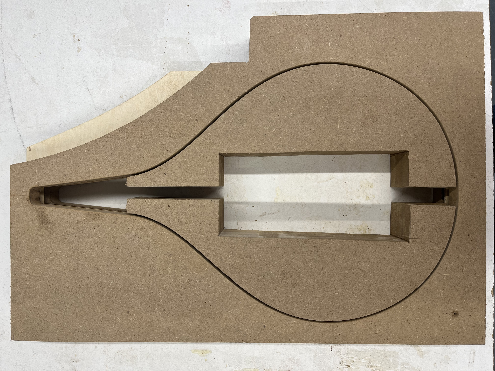

Body Mold
The first step in in the build was to create a mold for steam bending the maple siding.
I laser cut a template for an inner and outer mold piece, with the gap the same width as the siding would be (shown right).
I then sandwiched the mold between layers of scrap rough-cut MDF, using wood glue and brad nails to hold it together.
I flush trim bit on the router table allowed me to carve the MDF to match the laser cut template, creating a sturdy 3” thick mold exactly the shape I needed it.

laser-cut template

glue-up

finished mold